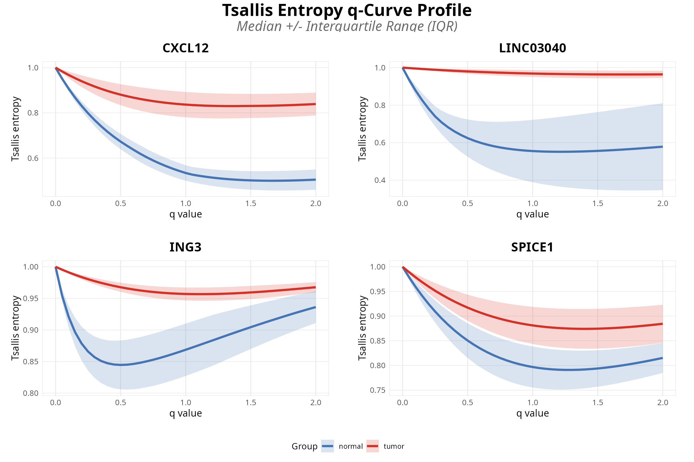
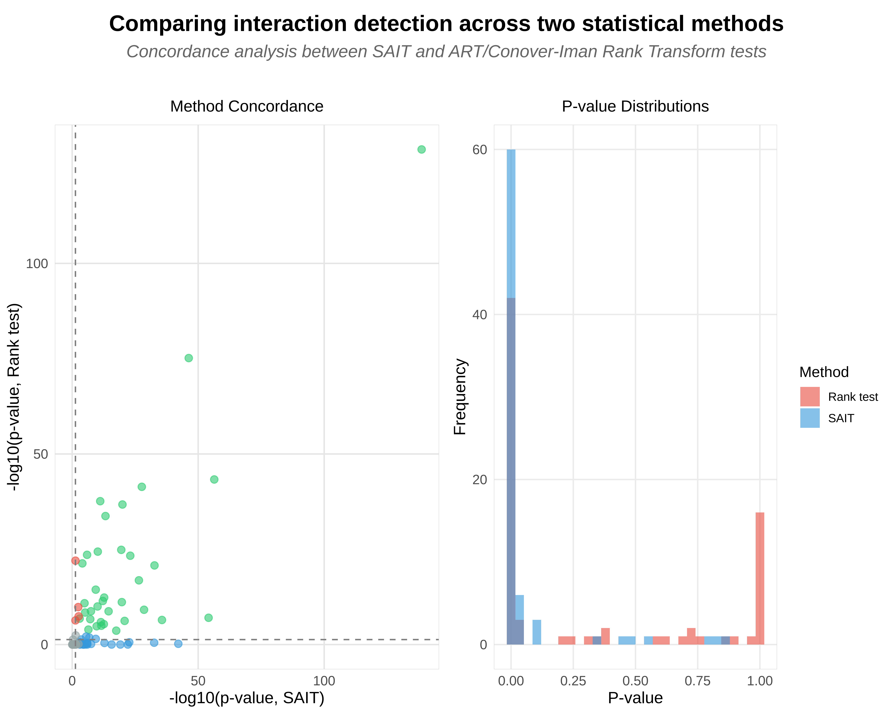

Appendix B: Non-Parametric Validation of Linear Model Results via GAM and Rank-Based Methods
Cristobal Gallardo gallardoalba@pm.me
2026-04-16
Source:vignettes/TSENAT_appendix_B.Rmd
TSENAT_appendix_B.RmdPurpose and Rationale
The primary goal of this vignette is to validate that discoveries of scale-dependent entropic index × group interactions from linear models generalize to non-parametric statistical frameworks with minimal assumptions.
Two Complementary Validation Approaches
Method 1: Generalized Additive Models (GAM) with ARIMA-Ordered Measurement Structure.
- Framework: Semi-parametric model combining flexible smooth functions (thin-plate splines) with linear parametric structure; assumes additive model Y = f₁(q) + f₂(condition) + f₃(q, condition) + ε where f terms are smooth rather than linear.
- Distributional assumption: Gaussian residuals (reasonable for entropy after appropriate transformation); no strong parametric family required beyond tail behavior.
- Treatment of entropic structure: Treats q-values as time-like ordered measurements, applies ARIMA(1,1,0) differencing to remove AR(1) autocorrelation and trend.
- Heteroscedasticity handling: Automatically detects variance heterogeneity (Breusch-Pagan test); estimates and applies variance weights via power-law variance model or residual-based weighting.
- Key advantage: Captures smooth nonlinear q × condition interactions while adapting to heterogeneous entropy variance; computationally efficient.
Method 2: Rank-Based Scheirer-Ray-Hare Test (SRH) with Hochberg Step-Up Correction.
- Framework: Pure non-parametric method; zero parametric or distributional assumptions.
- Distributional assumption: None; operates entirely on ranks (1, 2, …, n), equivalent to two-way ANOVA on ordinal data.
- Treatment of q-ordering: Two-way SRH test on ranks, treating q-values as within-subject paired measurements; decomposes ranked data via ANOVA and computes F-statistic.
- Heteroscedasticity handling: Rank transformation inherently robust to heteroscedasticity (variance differences do not affect relative ordering); Hochberg step-up correction controls FWER across multiple tests.
- Key advantage: Maximally robust to outliers and any distributional violations; valid under any continuous distribution and correlation structure.
Why Two Methods for One Question?
Statistical testing in transcriptomics faces a fundamental challenge: no single method is universally optimal. Different approaches trade-off power for robustness:
| Aspect | Parametric (GAM) | Non-Parametric (Rank-Based) |
|---|---|---|
| Assumptions | Normality, homoscedasticity | Ranks only; fully non-parametric |
| Power | Highest (if assumptions hold) | Good; reduced but robust to violations |
| Robustness | Moderate | Highest |
| Outlier sensitivity | Moderate potential for bias | Minimal; inherently resistant |
Validation strategy: Concordance between both methods confirms robustness across statistical frameworks.
Setup
This section initializes the analysis environment by loading required packages, setting a random seed for reproducibility, and preparing the test dataset.
suppressPackageStartupMessages({
library(TSENAT)
library(ggplot2)
library(SummarizedExperiment)
library(dplyr)
library(gridExtra)
})
set.seed(42)
# Load preprocessed dataset
data(readcounts)
readcounts <- as.matrix(readcounts)
mode(readcounts) <- "numeric"
# Load metadata
metadata_df <- read.table(
system.file("extdata", "metadata.tsv", package = "TSENAT"),
header = TRUE, sep = "\t"
)
gff3_dataset <- system.file("extdata", "annotation.gff3.gz", package = "TSENAT")
# Configure analysis parameters first (best practice: fail-fast validation)
config <- TSENAT_config(
sample_col = "sample",
condition_col = "condition",
subject_col = "paired_samples",
q = seq(0, 2, by = 0.05),
nthreads = 3,
paired = TRUE,
control = "normal"
)
# Build analysis object: creates SummarizedExperiment and initializes TSENATAnalysis
analysis <- build_analysis(
readcounts = readcounts,
tx2gene = gff3_dataset,
metadata = metadata_df,
tpm = tpm,
effective_length = effective_length,
config = config
)
# Apply filtering for quality control
analysis <- filter_analysis(
analysis,
stringency = "medium"
)Computing Tsallis Entropy with Pseudocount Regularization
Pseudocounts are critical for statistical robustness when applying rank-based tests to sparse RNA-seq count data. RNA-seq experiments typically contain many zero or near-zero counts, which creates two problems for rank-based nonparametric methods:
Ties in rankings: Sparse counts produce many tied values (especially zeros), which reduces the discriminatory power of rank tests. Rank-based statistics depend on unique orderings; when many observations are identical, the test statistic contains less information, reducing statistical power.
Library size artifacts: Small count differences due to sequencing depth variations overshadow true biological differences. Normalized library sizes (accounting for sequencing depth) ensure that entropy estimates reflect true biological diversity rather than technical artifacts (Robinson et al. 2010; Love et al. 2014).
By adding small pseudocounts proportional to library size, we achieve two benefits:
- Regularization breaks ties and prevents zero-inflation bias that compromises rank-based inference.
- Normalization makes entropy estimates comparable across samples with different sequencing depths. This approach is standard in RNA-seq analysis and is particularly important for entropy-based diversity metrics, which require positive values for logarithmic transforms.
The calculate_diversity() function implements automatic
pseudocount selection, scaling pseudocount magnitude and diversity
estimates by median library size to ensure robust statistical inference
across the range of sequencing depths in your dataset.
# Compute diversity using S4 wrapper with bootstrap confidence intervals
analysis <- calculate_diversity(
analysis,
norm = TRUE,
pseudocount = "auto"
)Rank-Based Approach (SRH)
The SRH test is a two-way non-parametric ANOVA that operates on ranks rather than raw values. It is particularly well-suited for Tsallis entropy analysis for three fundamental reasons:
- Robustness to Distribution Violations
Tsallis entropy values exhibit inherent distributional properties that often violate parametric assumptions:
- Non-normality: Entropy commonly exhibits bounded support (e.g., normalized entropy in [0,1]), producing skewed or bimodal distributions rather than normal distributions.
- Heteroscedasticity: Variance in entropy estimates varies systematically across q-values. Low q-values (emphasizing rare transcripts) produce volatile entropy estimates with high variance; high q-values (emphasizing abundant transcripts) produce stable estimates with lower variance.
- Outlier sensitivity: Rare isoforms and count variability can produce extreme entropy values that heavily influence parametric tests.
The SRH test avoids these issues by replacing raw entropy values with their ranks (1, 2, 3, …, n). Ranks are uniformly distributed and contain no outliers, making the method valid for ANY continuous distribution—normal, skewed, bimodal, or otherwise. Critically, rank ordering is unaffected by normalization choice; whether entropy is normalized, log-transformed, or left raw, the test produces identical results (Conover and Iman 1981; Puri and Sen 1971).
- Paired Design for Ordered q-Value Structure
Tsallis entropy has a fundamental sequential property: entropy curves are smooth functions of q. As q increases from 0 (rare-species-emphasizing) to ∞ (common-species-emphasizing), entropy values change systematically. This ordered structure is critical to interpreting q-dependent patterns and exhibits AR(1) autocorrelation: consecutive q-values produce correlated entropy estimates.
The SRH test handles this structure by treating measurements as paired/repeated within genes across ordered q-values, capturing the sequential nature while maintaining exchangeability of samples. Autocorrelation in the original entropy values does NOT affect rank ordering or the validity of inference—this property, known as the exchangeability property of rank-based tests, ensures that rank-based inference is valid under any correlation pattern (Ernst 2004; Song 2007). Within-subject ranking preserves pairing structure while removing the influence of AR(1) dependence through rank transformation (Zhang and Yuan 2018; Saulsbury 2020).
- Interaction Testing: Testing q × Condition Effects
The implementation uses two-way ANOVA applied to ranks (the modern computational approach):
where:
- Data are first ranked: (within-subject ranks for paired designs)
- Two-way ANOVA decomposes ranked data:
- = sum of squares for condition interaction / degrees of freedom
- = residual sum of squares / residual degrees of freedom
- -statistic follows -distribution under null hypothesis of no interaction
This directly tests the core biological question: “Does entropy q-dependence differ between groups?” The rank-transformed two-way ANOVA is mathematically equivalent to the original SRH test statistic but computationally more stable and easier to interpret. Modern extensions of rank-based testing demonstrate the validity of permutation procedures for testing interactions even under complex dependence structures (Meinshausen et al. 2012).
Assumption Validation
To ensure valid statistical inference, we verify key data assumptions across multiple dimensions.
# Validate statistical assumptions (including GAM diagnostics)
analysis <- calculate_assumptions(
analysis,
checks = "all" # Include core checks + GAM diagnostics
)
# Get assumptions
assumptions_text <- results(analysis, type = "assumptions")
print(assumptions_text)| Characteristic | Test | Result | Interpretation |
|---|---|---|---|
| Exchangeability | Permutation test | p=0e+00 | Ordering detected |
| Monotonicity | Spearman rho | r=0.259 | Heterogeneous |
| Consistency | Kendall’s W / ICC | W=0e+00, ICC=0.108 | Low |
| Concurvity | Smooth collinearity | 0.000 | Low |
| EDF Ratio | Smoothing | 0.024 | Over-smoothed |
| Non-linearity | Delta R^2 vs LM | 0.0% | Use linear |
| Basis Dimension | Spline basis | k=10 | Adequate |
| Correlation fit | Correlation fit | Observed autocorr=-0.007; independence suitable | Good fit |
| Cluster variation | Cluster variation | Mean size=77.0 - homogeneous | Homogeneous |
| Independence | Independence | Mean within-cluster residual correlation=-0.018 | Independent |
| Scale parameter | Scale parameter | phi=0.100 | Under-dispersed (rare) |
| Variance components | Variance components | ICC=0.119; B=0.006, W=0.048 | Lmm justified |
| Normality | Normality | p=3.57e-27 | Non-normal |
| Homogeneity | Homogeneity | p=3.14e-128; CV=0.439 | Heterogeneous |
| Influence | Influence | Outliers=778, Extreme=0, Influential=26.6% | Many outliers |
| Variance adequacy | Variance adequacy | Components for 90%=10, 95%=13, 99%=17. Poor dimens | Poor reduction |
| Bootstrap stability | Bootstrap stability | Bootstrap SE=0.200; Stable CIs=100%. Moderate boot | Moderate stability |
Interpretation of Results: The exchangeability test, the unique assumption of the SRH test, detects strong serial correlation (p ≈ 0), indicating that consecutive samples are more correlated than expected by chance. This violation of exchangeability is not problematic for SRH because rank-based inference satisfies the exchangeability property—a principle ensuring that rank statistics depend only on value ordering, not on correlations in the original data (Conover and Iman 1981; Puri and Sen 1971; Saulsbury 2020). The three reasons outlined above (robustness to distribution violations, paired design for ordered structure, and interaction testing) together uniquely suit SRH for multi-q entropy validation without requiring strong distributional assumptions.
SRH Test: Testing q x Condition Interactions
Now we will use the SRH test to evaluate whether entropy patterns across entropic indices (q-values) differ between normal and tumor samples.
# IMPORTANT: Create a copy of analysis before running SRH
# This preserves the GAM results in 'analysis' for later concordance comparison
# Run SRH test for q * condition INTERACTION on the copy
analysis <- calculate_srh(
analysis,
multicorr = "hochberg"
)
# Extract ALL results (no filtering) for summary statistics
srh_results_all <- results(analysis, type = "rank_test", rankBy = "pvalue")
# Extract top significant genes for display
srh_results <- results(analysis, type = "rank_test", rankBy = "pvalue", n = 20, filterFDR = 0.05)
print(head(srh_results, n = 10))| Metric | Value |
|---|---|
| Genes tested | 77 |
| Significant (p < 0.05) | 3 |
| Significant (adj_p < 0.05, FWER-controlled) | 2 |
| NAs | 0 |
| Mean effect size () | 28.6% |
| Median effect size () | 26.2% |
| Strong effect genes ( > 10%) | 1 |
| Note: | |
| Scheirer-Ray-Hare test: nonparametric rank-based ANOVA for paired designs. |
| Gene | P-value | Adj. P-value | F-Statistic | Effect Size (η²) | Interaction Class | |
|---|---|---|---|---|---|---|
| 1 | CXCL12 | 9.4e-63 | 7.2e-61 | 14.3098 | 0.2996 | Strongly q-dependent |
| 2 | LINC03040 | 9.6e-30 | 7.3e-28 | 7.0503 | 0.0728 | Moderately q-dependent |
| 72 | ING3 | 0.017000 | 1 | 1.5613 | 0.0876 | Moderately q-dependent |
| 23 | SPICE1 | 0.062881 | 1 | 1.3820 | 0.3557 | Robust across q |
| 48 | FAM114A2 | 0.079169 | 1 | 1.3472 | 0.2218 | Robust across q |
| 24 | THY1 | 0.300758 | 1 | 1.1095 | 0.3530 | Robust across q |
| 34 | METTL26 | 0.353148 | 1 | 1.0736 | 0.3005 | Robust across q |
| 45 | RAP1GDS1 | 0.385474 | 1 | 1.0529 | 0.2275 | Robust across q |
| 55 | GSKIP | 0.535638 | 1 | 0.9642 | 0.1818 | Robust across q |
| 35 | MEF2A | 0.591729 | 1 | 0.9324 | 0.3000 | Robust across q |
| Note: | ||||||
| Effect size η² quantifies strength of q × condition interaction; top 10 genes ranked by significance. P-values < 0.0001 shown in scientific notation for precision. |
Visualize q-curves for top genes:
# Plot top genes from SRH test (using all genes, not just significant ones)
# This ensures the plot displays n_top genes regardless of significance threshold
top_genes_plot <- plot_diversity_spectrum(analysis, lm_res = srh_results_all, n_top = 4)
print(top_genes_plot)
Extended Data Figure 1 | SRH rank test results for scale-dependent isoform switching.
Generalized Additive Model Approach (GAM)
This section loads precomputed GAM results generated in the main vignette (TSENAT.Rmd).
# Load precomputed LM analysis object from RDS file
analysis_lm <- readRDS(
system.file("extdata", "analysis_lm.rds", package = "TSENAT")
)
# Extract GAM/LM results for inspection using accessor function
gam_results <- results(analysis_lm, type = "lm", rankBy = "pvalue")
print(gam_results)| Metric | Value |
|---|---|
| Genes tested | 76 |
| Significant (p < 0.05) | 65 |
| Concordant (p < 0.05 AND adj_p < 0.05) | 59 |
| NAs | 0 |
| Mean effect size | 20.1% |
| Median effect size | 15.4% |
| Strong effect genes (effect_size > 30%) | 17 |
| Model convergence rate | 100.0% |
| Note: | |
| Aggregate statistics across all genes tested by GAM method; effect size > 30% indicates strong biological signal. |
| Gene | p (interaction) | Adjusted p | Effect size | Test statistic | df |
|---|---|---|---|---|---|
| CXCL12 | 3.93e-164 | 2.99e-162 | 81.3% | 752.51 | 640 |
| THY1 | 9.80e-97 | 7.35e-95 | 60.1% | 442.14 | 640 |
| ING3 | 2.72e-77 | 2.02e-75 | 35.3% | 352.59 | 640 |
| SNHG10 | 9.81e-75 | 7.16e-73 | 5.1% | 340.82 | 640 |
| LINC03040 | 1.87e-57 | 1.35e-55 | 73.8% | 261.24 | 643 |
| HDAC2 | 2.61e-51 | 1.85e-49 | 28.4% | 232.94 | 640 |
| ENSG00000274322 | 4.75e-48 | 3.33e-46 | 4.7% | 217.93 | 640 |
| MEF2A | 1.37e-43 | 9.46e-42 | 19.3% | 197.39 | 640 |
| RAP1GDS1 | 7.65e-38 | 5.20e-36 | 54.8% | 170.93 | 640 |
| PDE7A | 1.64e-37 | 1.10e-35 | 0.4% | 169.40 | 640 |
| Note: | |||||
| Top 10 genes ranked by significance; p-values < 0.001 shown in scientific notation; effect size range 0-100%. |
Method Concordance Analysis
A critical validation step is to compare whether the SRH rank-based test and GAM produce consistent results. High concordance between methods (i.e., genes significant in both approaches) provides strong evidence that discoveries are robust to methodological choice. Discordant genes—those significant in only one method—warrant closer inspection: they may represent genuine biological signals revealed by one method’s specific advantages, or artifacts of that method’s assumptions. This section quantifies agreement between approaches and identifies high-confidence genes significant across both statistical frameworks.
# Compute concordance analysis using new two-object API
analysis <- calculate_concordance(
analysis_lm = analysis_lm,
analysis_rank = analysis,
verbose = TRUE
)
# Extract concordance results with list format for component display
concordance_results <- results(analysis, type = "concordance", format = "list")| Gene | LM adj p | Rank test adj p | LM Effect | Rank test rho^2 |
|---|---|---|---|---|
| CXCL12 | 2.99e-162 | 7.24e-61 | 81.3% | 0.300 |
| LINC03040 | 1.35e-55 | 7.287e-28 | 73.8% | 0.073 |
| Note: | ||||
| High-confidence genes: significant by both GAM and Scheirer-Ray-Hare rank test (adj p < 0.05); η² = rank test effect size. |
Statistical Power vs. Robustness: Understanding Method Discordance
The striking discordance between GAM and SRH results (75.0% significant in LM only, 0.0% in rank test only, 2.6% both methods significant) reflects a fundamental trade-off in statistical methodology: parametric methods maximize power when assumptions hold, while nonparametric methods sacrifice power for robustness to assumption violations.
GAM’s superior power derives from two factors:
Distributional assumptions: GAM assumes approximately normal residuals and homogeneous variance, which are reasonable after appropriate transformation for entropy data. Under these assumptions, parametric methods are theoretically optimal, achieving maximum power for a given type I error rate. The rank-based SRH test is assumption-free but necessarily discards quantitative information by converting measurements to ranks, which reduces statistical power when the underlying data are approximately normal.
Model flexibility with penalty: GAM uses thin-plate splines with smoothness penalties that simultaneously fit nonlinear patterns while controlling degrees of freedom. This flexibility allows GAM to detect subtle entropic index × group interactions across all q-values. The SRH test, by contrast, operates on rank patterns only, which is inherently less sensitive to continuous relationships across the ordering (q-values).
This complementary approach—combining high-power parametric tests with robust nonparametric alternatives—provides confidence that discoveries are methodologically sound rather than artifacts of statistical assumptions.
Visualization: Method Comparison
Visual comparison of concordance patterns provides intuitive assessment of which genes align between methods and which are method-specific. The following plots display significance calls, effect sizes, and agreement metrics in a format that facilitates interpretation of both robust discoveries and method-specific findings.
# Create comparison plot using S4 wrapper
# Concordance analysis results are stored in analysis metadata after calculate_concordance()
p <- plot_concordance(analysis, verbose = TRUE)
print(p)
Method concordance visualization comparing SRH rank-based and GAM approaches for detecting q × condition interactions.
Session Information
sessionInfo()
#> R version 4.5.2 (2025-10-31)
#> Platform: x86_64-conda-linux-gnu
#> Running under: Ubuntu 22.04.5 LTS
#>
#> Matrix products: default
#> BLAS/LAPACK: /home/nouser/miniconda3/lib/libopenblasp-r0.3.30.so; LAPACK version 3.12.0
#>
#> locale:
#> [1] LC_CTYPE=es_ES.UTF-8 LC_NUMERIC=C
#> [3] LC_TIME=de_DE.UTF-8 LC_COLLATE=es_ES.UTF-8
#> [5] LC_MONETARY=de_DE.UTF-8 LC_MESSAGES=es_ES.UTF-8
#> [7] LC_PAPER=de_DE.UTF-8 LC_NAME=C
#> [9] LC_ADDRESS=C LC_TELEPHONE=C
#> [11] LC_MEASUREMENT=de_DE.UTF-8 LC_IDENTIFICATION=C
#>
#> time zone: Europe/Berlin
#> tzcode source: system (glibc)
#>
#> attached base packages:
#> [1] stats4 stats graphics grDevices utils datasets methods
#> [8] base
#>
#> other attached packages:
#> [1] gridExtra_2.3 dplyr_1.2.0
#> [3] SummarizedExperiment_1.40.0 Biobase_2.70.0
#> [5] GenomicRanges_1.62.1 Seqinfo_1.0.0
#> [7] IRanges_2.44.0 S4Vectors_0.48.0
#> [9] BiocGenerics_0.56.0 generics_0.1.4
#> [11] MatrixGenerics_1.22.0 matrixStats_1.5.0
#> [13] ggplot2_4.0.2 TSENAT_0.99.0
#> [15] kableExtra_1.4.0
#>
#> loaded via a namespace (and not attached):
#> [1] gtable_0.3.6 xfun_0.56 bslib_0.10.0
#> [4] htmlwidgets_1.6.4 lattice_0.22-9 vctrs_0.7.2
#> [7] tools_4.5.2 parallel_4.5.2 tibble_3.3.1
#> [10] pkgconfig_2.0.3 pheatmap_1.0.13 Matrix_1.7-4
#> [13] RColorBrewer_1.1-3 S7_0.2.1 desc_1.4.3
#> [16] lifecycle_1.0.5 compiler_4.5.2 farver_2.1.2
#> [19] stringr_1.6.0 textshaping_1.0.5 codetools_0.2-20
#> [22] htmltools_0.5.9 sass_0.4.10 yaml_2.3.12
#> [25] pkgdown_2.2.0 pillar_1.11.1 jquerylib_0.1.4
#> [28] tidyr_1.3.2 MASS_7.3-65 BiocParallel_1.44.0
#> [31] cachem_1.1.0 DelayedArray_0.36.0 abind_1.4-8
#> [34] nlme_3.1-168 tidyselect_1.2.1 digest_0.6.39
#> [37] stringi_1.8.7 purrr_1.2.1 labeling_0.4.3
#> [40] geepack_1.3.13 splines_4.5.2 cowplot_1.2.0
#> [43] fastmap_1.2.0 grid_4.5.2 cli_3.6.5
#> [46] SparseArray_1.10.9 magrittr_2.0.4 S4Arrays_1.10.1
#> [49] broom_1.0.12 withr_3.0.2 backports_1.5.0
#> [52] scales_1.4.0 rmarkdown_2.30 XVector_0.50.0
#> [55] otel_0.2.0 ragg_1.5.0 memoise_2.0.1
#> [58] evaluate_1.0.5 knitr_1.51 viridisLite_0.4.3
#> [61] mgcv_1.9-4 rlang_1.1.7 Rcpp_1.1.1
#> [64] glue_1.8.0 xml2_1.5.2 svglite_2.2.2
#> [67] rstudioapi_0.18.0 jsonlite_2.0.0 R6_2.6.1
#> [70] systemfonts_1.3.2 fs_1.6.7